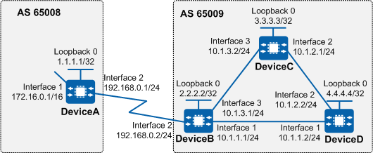

Example for Configuring Basic BGP Functions
Networking Requirements
If multiple ASs in a region require mutual access, they need to exchange their local routes with one another, and BGP can be used to meet this requirement.
On the network shown in Figure 1, DeviceA is in AS 65008, and DeviceB, DeviceC, and DeviceD are in AS 65009. The routing tables of these devices store a large number of routes, and routes change frequently. After BGP is enabled on the devices, they can exchange routes with one another. If the routes on one device are updated, the device sends Update messages to its peers carrying only the updated routing information, which greatly reduces bandwidth consumption.

In this example, interface 1, interface 2, and interface 3 represent 10GE0/0/1, 10GE0/0/2, and 10GE0/0/3, respectively.

To complete the configuration, you need the following data:
Precautions
During the configuration, note the following:
- Before establishing a BGP peer relationship, ensure that BGP peers are reachable to each other through IGP routes. In this way, the BGP peers can exchange routing information.
During the establishment of a peer relationship, if the IP address of the specified peer is a loopback interface address or a sub-interface address, the peer connect-interface command needs to be run on both ends to ensure correct connection.
If there is no directly connected physical link between EBGP peers, run the peer ebgp-max-hop command to allow the EBGP peers to establish a TCP connection through multiple hops.
- To improve security, you are advised to deploy BGP security measures. For details, see "Configuring BGP Authentication." Keychain authentication is used as an example. For details, see Example for Configuring Keychain Authentication for BGP.
Configuration Roadmap
The configuration roadmap is as follows:
- Establish IGP connections among DeviceB, DeviceC, and DeviceD. (OSPF is used as the IGP in this example.)
Establish IBGP connections between DeviceB, DeviceC, and DeviceD.
Use the network command on DeviceA to configure BGP to import local routes and advertise them to peers. Then, check the BGP routing tables on DeviceA, DeviceB, and DeviceC.
Configure BGP on DeviceB to import direct routes, and then check the routing tables of DeviceA and DeviceC.
Procedure
- Assign an IP address to each interface. DeviceA is used here as an example, and configurations of other devices are similar to that of DeviceA.
# Configure DeviceA.
<HUAWEI> system-view [HUAWEI] sysname DeviceA [DeviceA] interface 10ge 0/0/1 [DeviceA-10GE0/0/1] ip address 172.16.0.1 16 [DeviceA-10GE0/0/1] quit [DeviceA] interface 10ge 0/0/2 [DeviceA-10GE0/0/2] ip address 192.168.0.1 24 [DeviceA-10GE0/0/2] quit [DeviceA] interface loopback0 [DeviceA-loopback0] ip address 1.1.1.1 32 [DeviceA-loopback0] quit
- Configure OSPF to ensure that BGP peers can exchange routing information.
# Configure DeviceB.
[DeviceB] ospf 1 [DeviceB-ospf-1] area 0 [DeviceB-ospf-1-area-0.0.0.0] network 10.1.1.0 0.0.0.255 [DeviceB-ospf-1-area-0.0.0.0] network 10.1.3.0 0.0.0.255 [DeviceB-ospf-1-area-0.0.0.0] network 2.2.2.2 0.0.0.0 [DeviceB-ospf-1-area-0.0.0.0] quit [DeviceB-ospf-1] quit
# Configure DeviceC.
[DeviceC] ospf 1 [DeviceC-ospf-1] area 0 [DeviceC-ospf-1-area-0.0.0.0] network 10.1.2.0 0.0.0.255 [DeviceC-ospf-1-area-0.0.0.0] network 10.1.3.0 0.0.0.255 [DeviceC-ospf-1-area-0.0.0.0] network 3.3.3.3 0.0.0.0 [DeviceC-ospf-1-area-0.0.0.0] quit [DeviceC-ospf-1] quit
# Configure DeviceD.
[DeviceD] ospf 1 [DeviceD-ospf-1] area 0 [DeviceD-ospf-1-area-0.0.0.0] network 10.1.1.0 0.0.0.255 [DeviceD-ospf-1-area-0.0.0.0] network 10.1.2.0 0.0.0.255 [DeviceD-ospf-1-area-0.0.0.0] network 4.4.4.4 0.0.0.0 [DeviceD-ospf-1-area-0.0.0.0] quit [DeviceD-ospf-1] quit
- Configure IBGP connections.
# Configure DeviceB.
[DeviceB] bgp 65009 [DeviceB-bgp] router-id 2.2.2.2 [DeviceB-bgp] peer 3.3.3.3 as-number 65009 [DeviceB-bgp] peer 4.4.4.4 as-number 65009 [DeviceB-bgp] peer 3.3.3.3 connect-interface LoopBack0 [DeviceB-bgp] peer 4.4.4.4 connect-interface LoopBack0 [DeviceB-bgp] quit
# Configure DeviceC.
[DeviceC] bgp 65009 [DeviceC-bgp] router-id 3.3.3.3 [DeviceC-bgp] peer 2.2.2.2 as-number 65009 [DeviceC-bgp] peer 4.4.4.4 as-number 65009 [DeviceC-bgp] peer 2.2.2.2 connect-interface LoopBack0 [DeviceC-bgp] peer 4.4.4.4 connect-interface LoopBack0 [DeviceC-bgp] quit
# Configure DeviceD.
[DeviceD] bgp 65009 [DeviceD-bgp] router-id 4.4.4.4 [DeviceD-bgp] peer 2.2.2.2 as-number 65009 [DeviceD-bgp] peer 3.3.3.3 as-number 65009 [DeviceD-bgp] peer 2.2.2.2 connect-interface LoopBack0 [DeviceD-bgp] peer 3.3.3.3 connect-interface LoopBack0 [DeviceD-bgp] quit
- Configure EBGP.
# Configure DeviceA.
[DeviceA] bgp 65008 [DeviceA-bgp] router-id 1.1.1.1 [DeviceA-bgp] peer 192.168.0.2 as-number 65009 [DeviceA-bgp] quit
# Configure DeviceB.
[DeviceB] bgp 65009 [DeviceB-bgp] peer 192.168.0.1 as-number 65008 [DeviceB-bgp] quit
# Check the status of BGP connections.
[DeviceB] display bgp peer BGP local router ID : 2.2.2.2 Local AS number : 65009 Total number of peers : 3 Peers in established state : 3 Peer V AS MsgRcvd MsgSent OutQ Up/Down State PrefRcv 3.3.3.3 4 65009 5 5 0 00:44:58 Established 0 4.4.4.4 4 65009 4 4 0 00:40:54 Established 0 192.168.0.1 4 65008 3 3 0 00:44:03 Established 0
The command output shows that DeviceB has established BGP connections with other devices and the connection status is Established.
- Configure DeviceA to advertise the route 172.16.0.0/16 to BGP peers.
# Configure DeviceA to advertise the route.
[DeviceA] bgp 65008 [DeviceA-bgp] ipv4-family unicast [DeviceA-bgp-af-ipv4] network 172.16.0.0 255.255.0.0 [DeviceA-bgp-af-ipv4] quit [DeviceA-bgp] quit
# Check the routing table of DeviceA.
[DeviceA] display bgp routing-table BGP Local router ID is 1.1.1.1 Status codes: * - valid, > - best, d - damped, x - best external, a - add path, h - history, i - internal, s - suppressed, S - Stale Origin : i - IGP, e - EGP, ? - incomplete RPKI validation codes: V - valid, I - invalid, N - not-found Total Number of Routes: 1 Network NextHop MED LocPrf PrefVal Path/Ogn *> 172.16.0.0 0.0.0.0 0 0 i
# Check the routing table of DeviceB.
[DeviceB] display bgp routing-table BGP Local router ID is 2.2.2.2 Status codes: * - valid, > - best, d - damped, x - best external, a - add path, h - history, i - internal, s - suppressed, S - Stale Origin : i - IGP, e - EGP, ? - incomplete RPKI validation codes: V - valid, I - invalid, N - not-found Total Number of Routes: 1 Network NextHop MED LocPrf PrefVal Path/Ogn *> 172.16.0.0 192.168.0.1 0 0 65008i
# Check the routing table of DeviceC.
[DeviceC] display bgp routing-table BGP Local router ID is 3.3.3.3 Status codes: * - valid, > - best, d - damped, x - best external, a - add path, h - history, i - internal, s - suppressed, S - Stale Origin : i - IGP, e - EGP, ? - incomplete RPKI validation codes: V - valid, I - invalid, N - not-found Total Number of Routes: 1 Network NextHop MED LocPrf PrefVal Path/Ogn i 172.16.0.0 192.168.0.1 0 100 0 65008i
The command output shows that DeviceC has learned the route to 172.16.0.0 from AS 65008. However, this route is invalid because its next hop, 192.168.0.1, is unreachable.
- Configure BGP to import direct routes.
# Configure DeviceB.
[DeviceB] bgp 65009 [DeviceB-bgp] ipv4-family unicast [DeviceB-bgp-af-ipv4] import-route direct [DeviceB-bgp-af-ipv4] quit [DeviceB-bgp] quit
Verifying the Configuration
# Check the BGP routing table of DeviceA.
[DeviceA] display bgp routing-table BGP Local router ID is 1.1.1.1 Status codes: * - valid, > - best, d - damped, x - best external, a - add path, h - history, i - internal, s - suppressed, S - Stale Origin : i - IGP, e - EGP, ? - incomplete RPKI validation codes: V - valid, I - invalid, N - not-found Total Number of Routes: 8 Network NextHop MED LocPrf PrefVal Path/Ogn *> 2.2.2.2/32 192.168.0.2 0 0 65009? *> 172.16.0.0 0.0.0.0 0 0 i *> 10.1.1.0/24 192.168.0.2 0 0 65009? *> 10.1.1.2/32 192.168.0.2 0 0 65009? *> 10.1.3.0/24 192.168.0.2 0 0 65009? *> 10.1.3.2/32 192.168.0.2 0 0 65009? * 192.168.0.0 192.168.0.2 0 0 65009? * 192.168.0.1/32 192.168.0.2 0 0 65009?
# Check the routing table of DeviceC.
[DeviceC] display bgp routing-table BGP Local router ID is 3.3.3.3 Status codes: * - valid, > - best, d - damped, x - best external, a - add path, h - history, i - internal, s - suppressed, S - Stale Origin : i - IGP, e - EGP, ? - incomplete RPKI validation codes: V - valid, I - invalid, N - not-found Total Number of Routes: 8 Network NextHop MED LocPrf PrefVal Path/Ogn i 2.2.2.2/32 2.2.2.2 0 100 0 ? *>i 172.16.0.0 192.168.0.1 0 100 0 65008i *>i 10.1.1.0/24 2.2.2.2 0 100 0 ? *>i 10.1.1.2/32 2.2.2.2 0 100 0 ? * i 10.1.3.0/24 2.2.2.2 0 100 0 ? * i 10.1.3.2/32 2.2.2.2 0 100 0 ? *>i 192.168.0.0 2.2.2.2 0 100 0 ? *>i 192.168.0.1/32 2.2.2.2 0 100 0 ?
The command output shows that the route to 172.16.0.0 becomes valid and that its next hop address is DeviceA's IP address.
# Verify the configuration using the ping command.
[DeviceC] ping 172.16.0.1
PING 172.16.0.1: 56 data bytes, press CTRL_C to break
Reply from 172.16.0.1: bytes=56 Sequence=1 ttl=254 time=31 ms
Reply from 172.16.0.1: bytes=56 Sequence=2 ttl=254 time=47 ms
Reply from 172.16.0.1: bytes=56 Sequence=3 ttl=254 time=31 ms
Reply from 172.16.0.1: bytes=56 Sequence=4 ttl=254 time=16 ms
Reply from 172.16.0.1: bytes=56 Sequence=5 ttl=254 time=31 ms
--- 172.16.0.1 ping statistics ---
5 packet(s) transmitted
5 packet(s) received
0.00% packet loss
round-trip min/avg/max = 16/31/47 ms
Configuration Scripts
-
# sysname DeviceA # interface 10GE0/0/1 ip address 172.16.0.1 255.255.0.0 # interface 10GE0/0/2 ip address 192.168.0.1 255.255.255.0 # interface LoopBack0 ip address 1.1.1.1 255.255.255.255 # bgp 65008 router-id 1.1.1.1 peer 192.168.0.2 as-number 65009 # ipv4-family unicast network 172.16.0.0 255.255.0.0 peer 192.168.0.2 enable # return
-
# sysname DeviceB # interface 10GE0/0/1 ip address 10.1.1.1 255.255.255.0 # interface 10GE0/0/2 ip address 192.168.0.2 255.255.255.0 # interface 10GE0/0/3 ip address 10.1.3.1 255.255.255.0 # interface LoopBack0 ip address 2.2.2.2 255.255.255.255 # bgp 65009 router-id 2.2.2.2 peer 3.3.3.3 as-number 65009 peer 3.3.3.3 connect-interface LoopBack0 peer 4.4.4.4 as-number 65009 peer 4.4.4.4 connect-interface LoopBack0 peer 192.168.0.1 as-number 65008 # ipv4-family unicast import-route direct peer 3.3.3.3 enable peer 4.4.4.4 enable peer 192.168.0.1 enable # ospf 1 area 0.0.0.0 network 2.2.2.2 0.0.0.0 network 10.1.1.0 0.0.0.255 network 10.1.3.0 0.0.0.255 # return
-
# sysname DeviceC # interface 10GE0/0/2 ip address 10.1.2.1 255.255.255.0 # interface 10GE0/0/3 ip address 10.1.3.2 255.255.255.0 # interface LoopBack0 ip address 3.3.3.3 255.255.255.255 # bgp 65009 router-id 3.3.3.3 peer 2.2.2.2 as-number 65009 peer 2.2.2.2 connect-interface LoopBack0 peer 4.4.4.4 as-number 65009 peer 4.4.4.4 connect-interface LoopBack0 # ipv4-family unicast peer 2.2.2.2 enable peer 4.4.4.4 enable # ospf 1 area 0.0.0.0 network 3.3.3.3 0.0.0.0 network 10.1.2.0 0.0.0.255 network 10.1.3.0 0.0.0.255 # return
-
# sysname DeviceD # interface 10GE0/0/1 ip address 10.1.1.2 255.255.255.0 # interface 10GE0/0/2 ip address 10.1.2.2 255.255.255.0 # interface LoopBack0 ip address 4.4.4.4 255.255.255.255 # bgp 65009 router-id 4.4.4.4 peer 2.2.2.2 as-number 65009 peer 2.2.2.2 connect-interface LoopBack0 peer 3.3.3.3 as-number 65009 peer 3.3.3.3 connect-interface LoopBack0 # ipv4-family unicast peer 2.2.2.2 enable peer 3.3.3.3 enable # ospf 1 area 0.0.0.0 network 4.4.4.4 0.0.0.0 network 10.1.1.0 0.0.0.255 network 10.1.2.0 0.0.0.255 # return